台大教授李宏毅老師[機器學習概論2021][機器學習基本概念]
📘 文章探討
1️⃣機器學習是甚麼?
2️⃣有哪些機器學習類型?
3️⃣怎麼找出與現實相近的預測?定義相關Loss Function與Optimization
4️⃣甚麼是Piecewise Linear Model以及Sigmoid、ReLU Function
5️⃣Deep(Hidden Layer)
6️⃣Reference
1️⃣ 機器學習是甚麼?
用非常白話文的方式就是去找尋一個function，使得每次輸入一個input就會輸出一段預測結果。 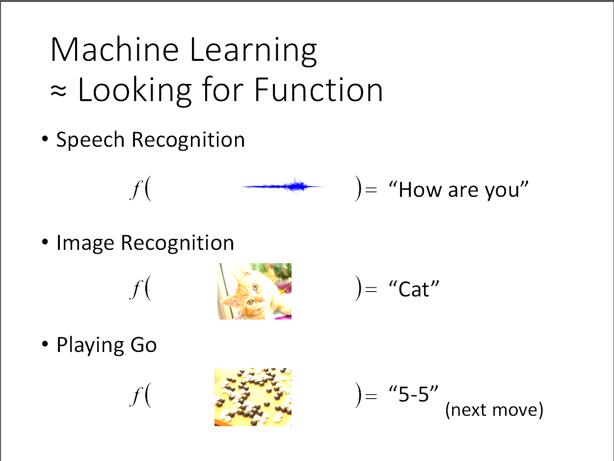
2️⃣有哪些機器學習類型?
1. Reggression: 輸出一個數值
2. Classification: 輸出一個類別
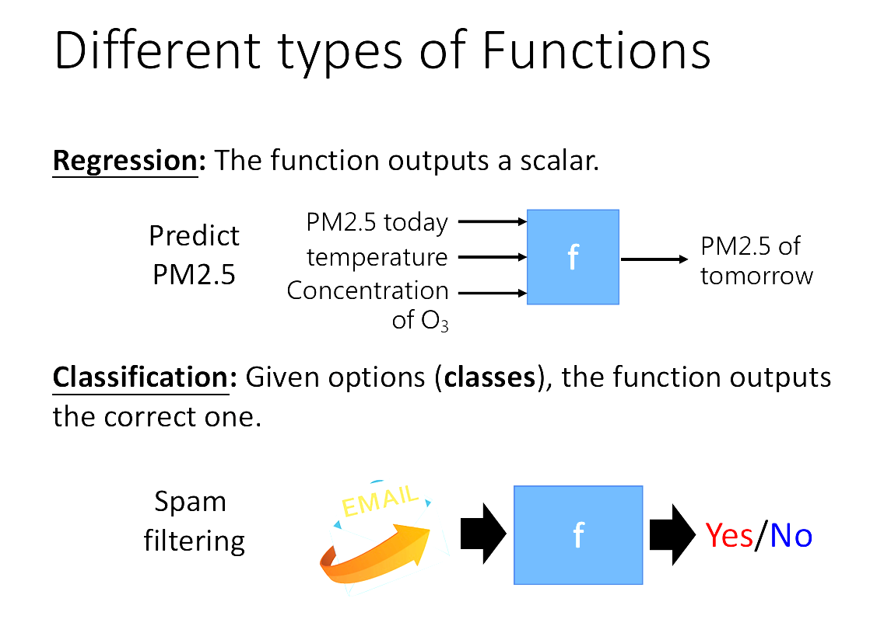
現在最熱門的就是Structured Learning，協助生成有結構的產物，
比方說圖片或文件，前陣子ChatGPT上線的Sora就是一個例子。
3️⃣怎麼找出與現實相近的預測?
定義相關Loss Function與Optimization
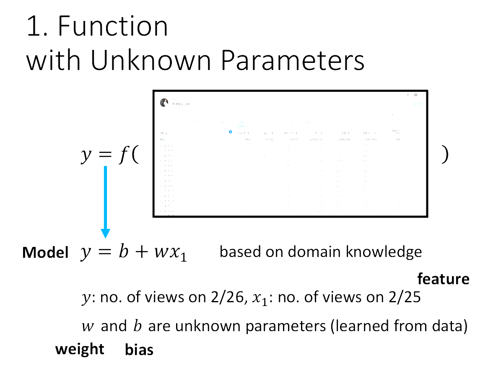Loss Function就是帶有一堆參數的function，也稱為所謂的Model。
要如何評估這個模型是不是一個好的模型，就是去看這個帶有許多參數的function 在輸入input之後，Loss值的大小，如果這個Loss的絕對值越小，則模型表現越好，也就 是能有越好的預測。
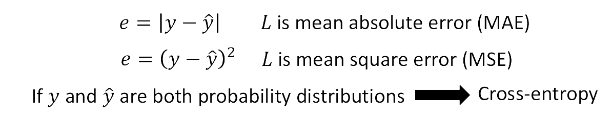
有很多評估loss的方法，先計算每個資料的error，可以用MAE、MSE等等，然後把這些error加總， 再做平均，即可得出這個模型對於這些資料所得到的Loss總和有多少。
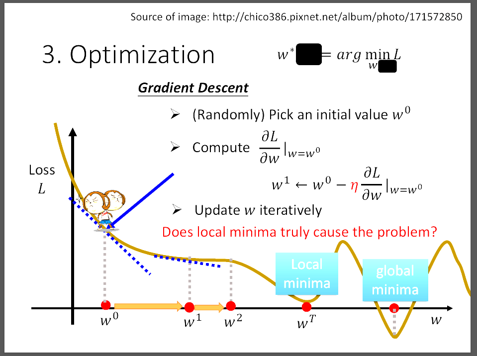
投影片中說明的是如何不斷更新模型(Loss Function)的參數，每一次當我們算出現在這個 Loss Function的Loss時，就會想要持續找出Loss最小的地方，更新weight也就是更新function的參數。 更新方式是找出這個點的切線斜率，若是切線斜率很大，則一次可以跨大一點的步伐(learning rate調大)。 並且若切線斜率小於0，則增加weight，若切線斜率大於0，則減少weight，直到到達local minimum。
4️⃣甚麼是Piecewise Linear Model以及Sigmoid、ReLU Function
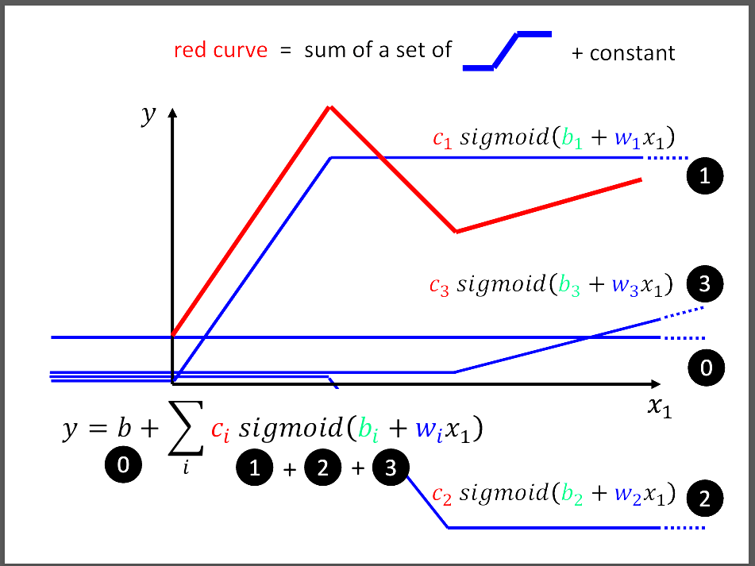
簡單的linear model很難應付許多的資料分布，也沒辦法很好的闡釋出這些資料之間的關係， 進而推得很好的預測。因此，這張圖說明我們可以利用很多的funciton，比方說圖片中的sigmoid function and constant function， 去拼湊出一個比較好的模型結構。這種用拼湊的模型就是Piecewise Linear Model。
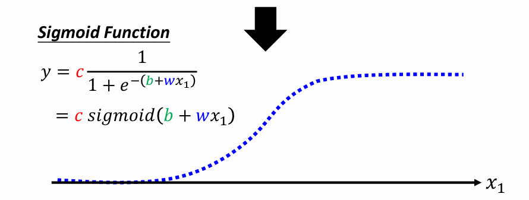
Sigmoid function也是一種activation function，主要是於神經網路中的非線性變換。 他有幾個函數特性，
- 輸出範圍在(0,1)，使得它非常適合處理需要將輸出改為機率的問題。
- 當x值很大時，輸出值會無限趨近於1，而當x很小時，輸出會趨近於0， 也就是輸入極大或極小時，都會趨於定值。
- Sigmoid function平滑且可微，這是神經網路中backpropagation所需要的特性。
- 二非類問題
- 在logistic regression中，Sigmoid function用於將linear regression映射成機率。
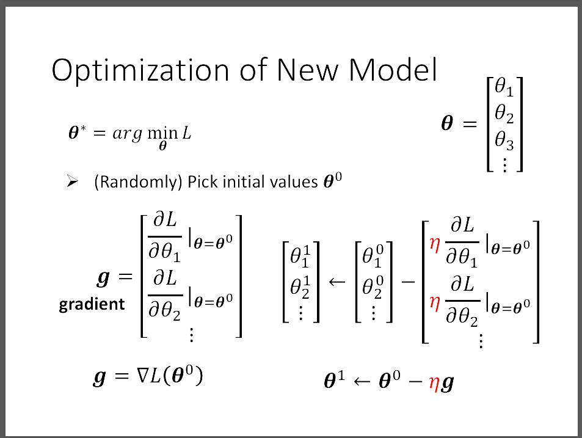
Gradient就是一個向量，裡面存放input的每個參數θ對Loss function的微分。然後把現在的gradientθ0減去η*第二次的gradientθ1，可得更新過的θ1。 持續計算直到不想做或是grandient為零向量，沒有辦法更新weight為止。但是現實生活中不太可能會出現gradient為零向量的情況發生。
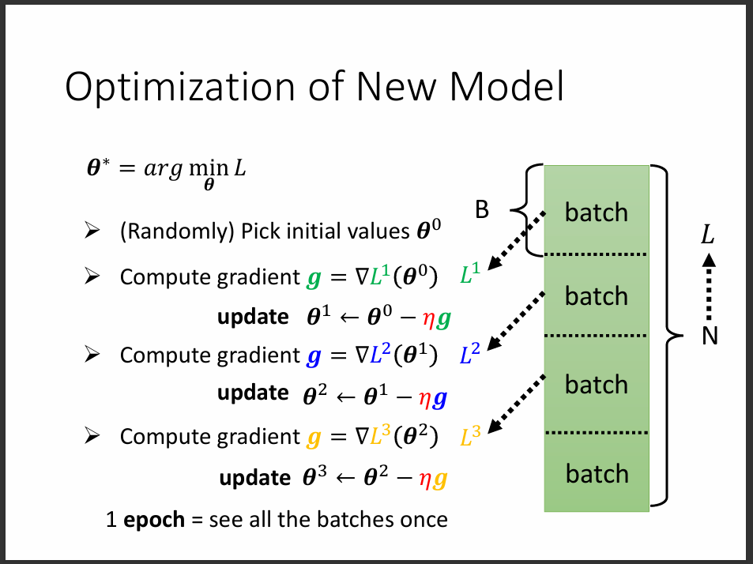
但是實際上我們不會拿整個資料集去做完整的一次更新參數，會把大資料集切分成多個batch， 每次要更新一次參數的時候，就拿一個batch去更新，稱為一次update，直到所有的batch都拿來更新為止。 而當我們把整個資料集，也就是所有batch都拿去更新完成之後，就稱為一次epoch，一次訓練可以有多次epoch。
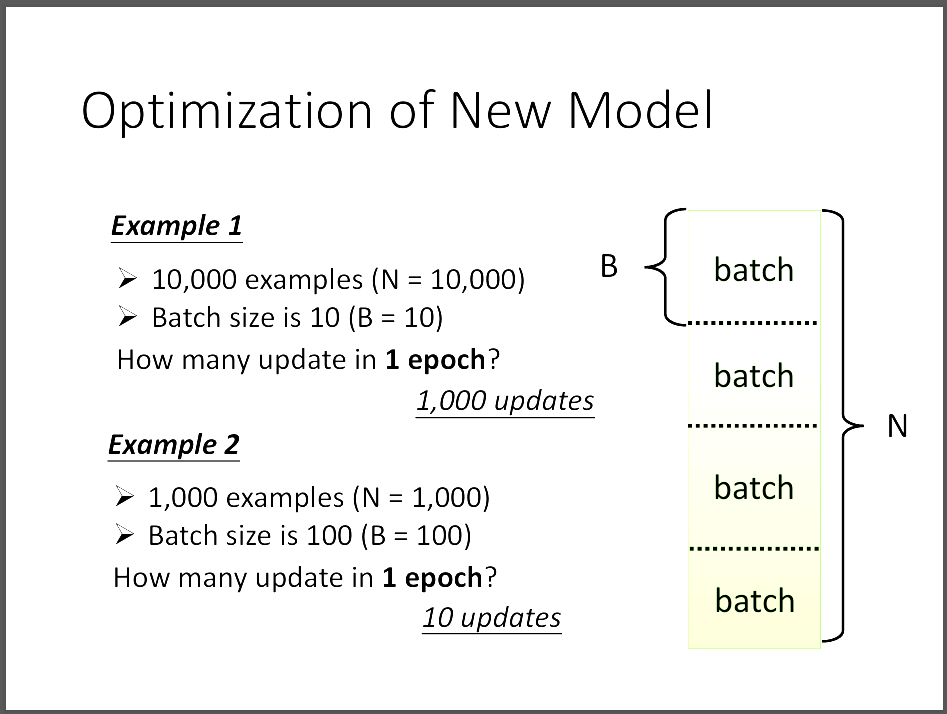
從圖片中的例子可以看出，當batch size越大的時候，參數updates的次數就越少，但過高的updates次數有可能導致overfitting的問題發生。
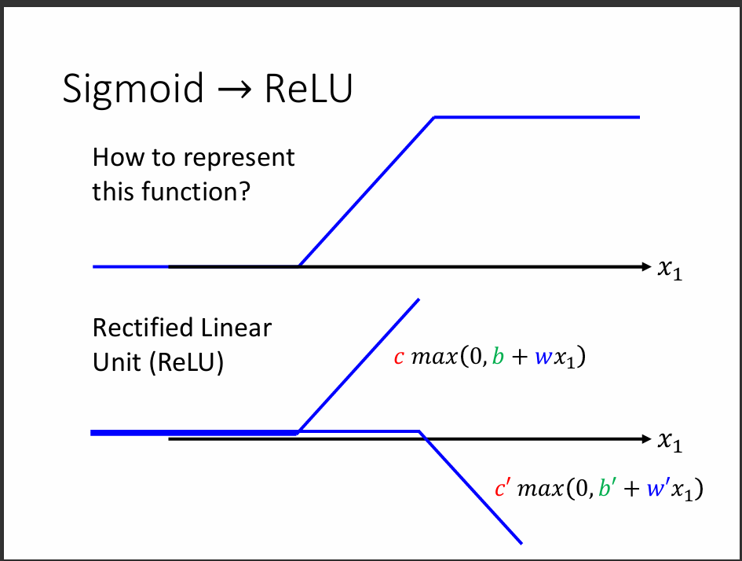
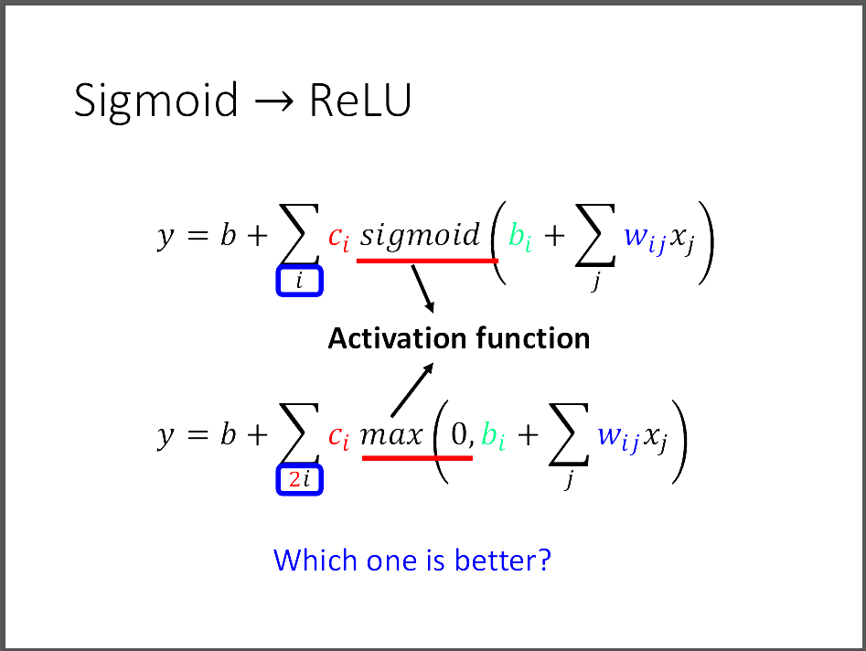
接下來我們可以來看要怎麼把ReLU轉換成Hard Sigmoid，其實就是用兩個ReLU其中一個放置顛倒就可以在當x越大時，y趨近於1。
5️⃣Deep(Hidden Layer)
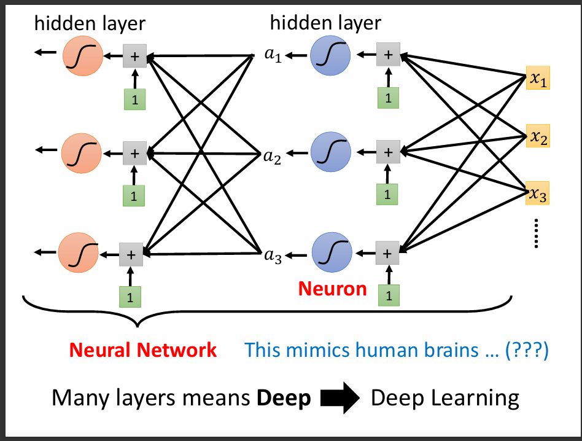
Neuron的意思是每一個activation function，Neural Network就是很多個Neuron組成的。
Hidden layer指的是在一層裡面有許多的Neuron組成，很多層的Hidden Layer就可以組成所謂的Deep Learning。
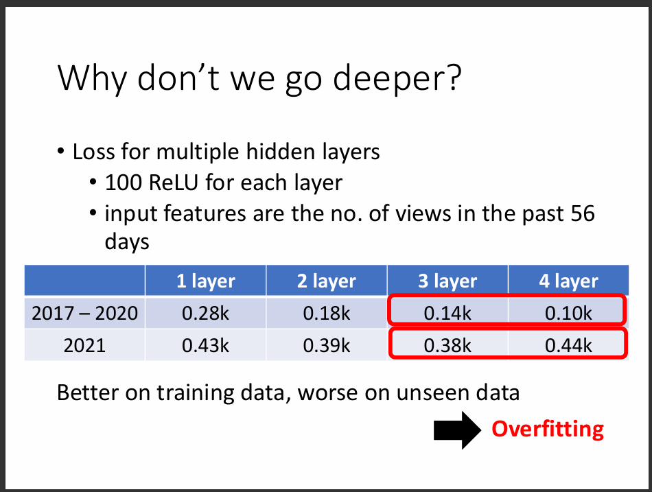
但為什麼有時候太Deep的模型不好，就是因為容易造成overfitting。Overfitting的意思就是在training data的表現很好，但是在testing data的表現上很差。 這是所有AI訓練人員所避免的事情。